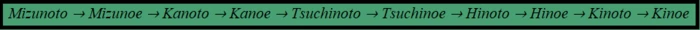
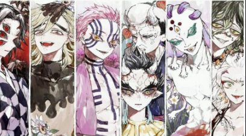
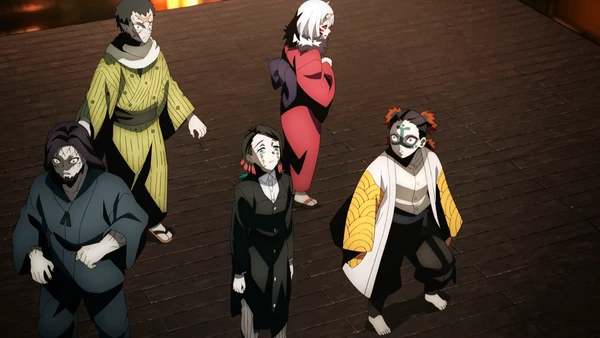

Tanjiro et sa famille son de pauvres vendeurs de charbon qui habitent dans la montagne. Un jour, lorsque Tanjiro va vendre du charbon au village en bas de la montagne, il se passe quelque chose d'horrible dans sa paisible maison. Lorqu'il remonte du village le lendemain, il decouvre avec horreur que sa famille s'est fait massacrer. Tous, sauf sa soeur, Nezuko, qui respire encore. tentant le tout pour le tout, il essaie de se diriger vers le village en portant sa soeur sur le dos. Mais, au le millieu de son périple, Nezuko recommence à bouger et essaie de le mordre. Arrive alors un pourfendeur de démons nommé Giyu Tomioka, il essaie alors de tuer Nezuko qui s'est transformée en démon suite à l'attaque de sa maison par le seigneur des démons en personne.Tanjiro convainc alors son sauveur de laisser la vie sauve à sa petite soeur. Ainsi, Giyu envoie Tanjiro se faire former par son ancien maître: Sakonji Urokodaki. Cet ainsi que Tanjiro commença sa grande quette pour devenir Pourfendeur de Démons et trouver une antidote afin de faire retrouver à soeur son humanité.
Les pourfendeurs de démons sont une association ne regroupants qu'une petite centaine de membres, ils sont dirigés part Kagaya Ubuyashiki. Il est le 97ème chef de l'Armée des pourfendeurs de démons, connu principalement sous le nom de « Oyakata-sama » par ses pairs. Il est également le chef de la famille Ubuyashiki. Les membres de cette armée conaissent l'existence des démons et les combattent afin de réduire leurs existence à néant. Ils combattent ces créatures du mal grace à leurs Katana nommés les Sabres du Soleil. Ils sont créés sur mesure parde grands forgerons et de tels sortes que lorque leurs détenteur dégaine la lame pour la première fois, cette dernière change de couleur et donne des attributs spéciaux à la lame selon la teinte obtenue. La lame est composée de lumière du soleil, le principal point faible des démons. Les pourfendeurs sont différenciés par différents grades. Une fois qu'un pourfendeur de démons s'est complètement installé dans l'organisation, il est classé comme membre du rang le plus bas : Mizunoto. Ils doivent accomplir une variété de missions pour finalement gravir les échelons et atteindre le rang le plus élevée : Kinoe. Voici tout les rangs de l'organisation:
Il est confié aux jeunes pourfendeurs un corbeau qui leurs fera office de messager, ainsi que l'uniforme de l'organisation, elle est légère, résistante aux crocs et aux griffes des démons les moins puissants et aux flammes. La pluspart des membres customisent leurs uniforme, portent un kimono ou un haori au dessus de cette blouse noire ressemblant aux uniformes écoliers japonnais.
Les pourfendeurs utilisent, pour se battre, une technique de combat appelée "souffle". Il existe une multitude de souffles, chaques guerrier en utilise un, ou deux pour Tanjiro. Chaque pourfedeur trouve sont style auprès de son formateur ou bien le créé lui même. Tout les souffles prennent base sur le souffle originel ou souffle du Soleil sous son autre nom. Les Piliers représentent un de ces types de combats comme part exemple l'eau ou la flamme. Les souffles se caractérisent la plupart du temps en un élément naturel ou bien un animal.
Relation entre les types de souffles
Les Piliers sont les pourfendeurs les plus hauts placés et les plus puissants. Normalement, la durée de vie d'un pourfendeur est très faible, mais pas celle des piliers! Ils sont assignés à une région qu'ils doivent protéger grace à leurs souffle particulier. Les trois seuls moyens de devenir un pilier sont : d'être entrainer par un pilier et aainsi devenir son successeur à sa mort ou lors de sa retraite, de tuer plus de 50 démons ou de tuer une des douzes lunes démoniaques (démons les plus puissants). Le seul moyen pour un pourfendeur de tuer un démon est de lui couper la tête avec leurs sabre du Soleil. Ou, dans le cas de Shinobu ( Pilier de l'insecte) qui n'a pas asser de force pour cette tâche, utiliser un poison à base de Glycine.

Les neufs piliers
Liste des Piliers à leurs première appartition(de gauche à droite):
Gyomei Himejia, Pilier de la roche.
Muichiro Tokito, Pilier de la brume.
Mitsuri Kanroji, Pilier de l'amour.
Kyojuro Rengoku, Pilier de la flamme.
Giyu Tomioka, Pilier de l'eau.
Shinobu Kocho, Pilier de l'insecte.
Tengen Uzui, Pilierdu son.
Sanemi Shinazugawa, Pilier du vent.
Obanai Iguro, Pilier du serpent.
Le tout premier démon arrivé sur Terre est Kibutsuji Muzan, il est apparu il y a plus de 10000 ans! Il est leurs chef et le seul à pouvoir changer des humains en démon, c'est donc lui qui a attaqué la maison de Tanjiro et changé Nezuko en une de ces créature. Le points faibles des Démons sont la lumière du soleil, qui les fais bruler et les réduits en cendre ;les fleurs de Glycine qu'ils évitent consciemment et dont ils détestent l'odeur. Un poison à base de cette plante est souvent utilisé afin de paralyser les démons. Les démons sont immortel et leurs membres repoussent lorsqu'ils sont coupés. Le seul moyen de les tuer est donc d'avoir un sabre du soleil et de leurs trancher la tête avec celui-ci.
Les douze lune démoniaques sont les douze démons les plus puissants. Ils sont séparés endeux groupes: les lunes inférieurs, au nombre de six, les plus faibles de Lunes et les lunes supérieurs, ausssi au nombre de six, les plus puissant. La première Lune étant la plus forte et la sixième la plus faible. Ont peut reconnaitre une Lune par le fait que leurs rang est gravés dans leur oeil. Les Rangs Inférieurs ont leurs numéros et rangs gravés dans un seul œil, tandis que les Rangs Supérieurs ont leurs numéros dans un œil et les kanji (charactères japonnais) pour « Rang Supérieur » dans l'autre.

les six Lunes supérieurs

les six Lunes inférieures
sources:
fandom kimetsu no yaiba wakanimManga demon slayer